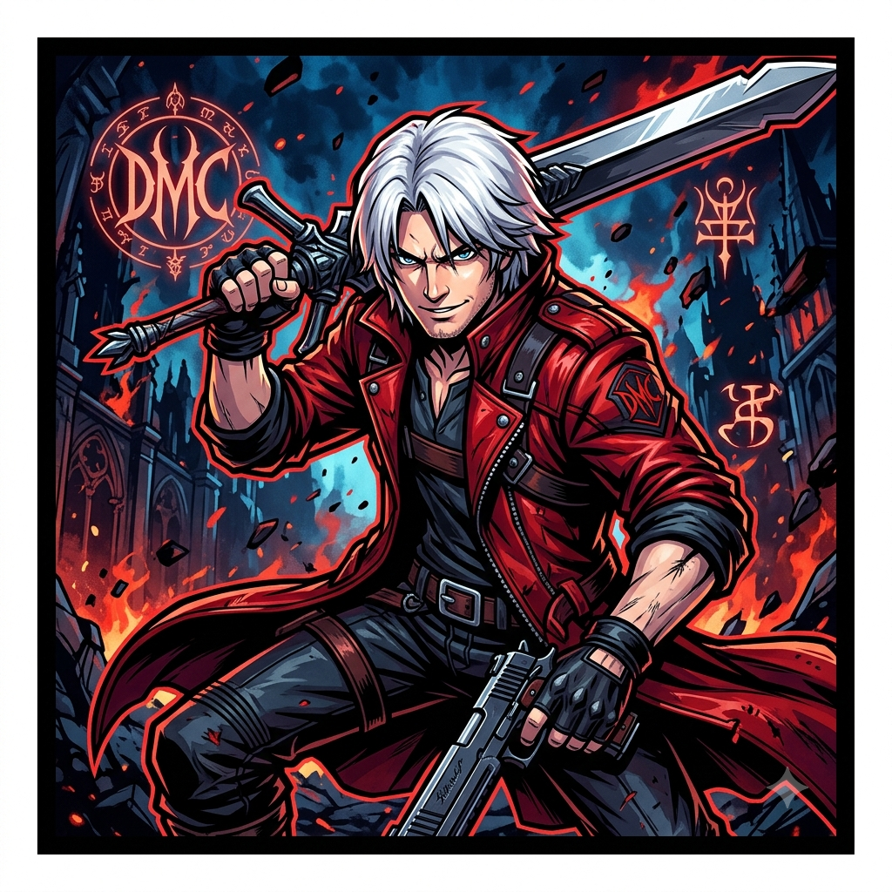

Meu primeiro post
Por: Mikaelly Maissa
Bem-vindos ao meu blog! Aqui conheceremos Dante, de Devil May Cry, um anime de fantasia e drama. Espero que gostem!
Aqui conheceremos mais da história desse personagem, aproveitem!

Por: Mikaelly Maissa
Bem-vindos ao meu blog! Aqui conheceremos Dante, de Devil May Cry, um anime de fantasia e drama. Espero que gostem!